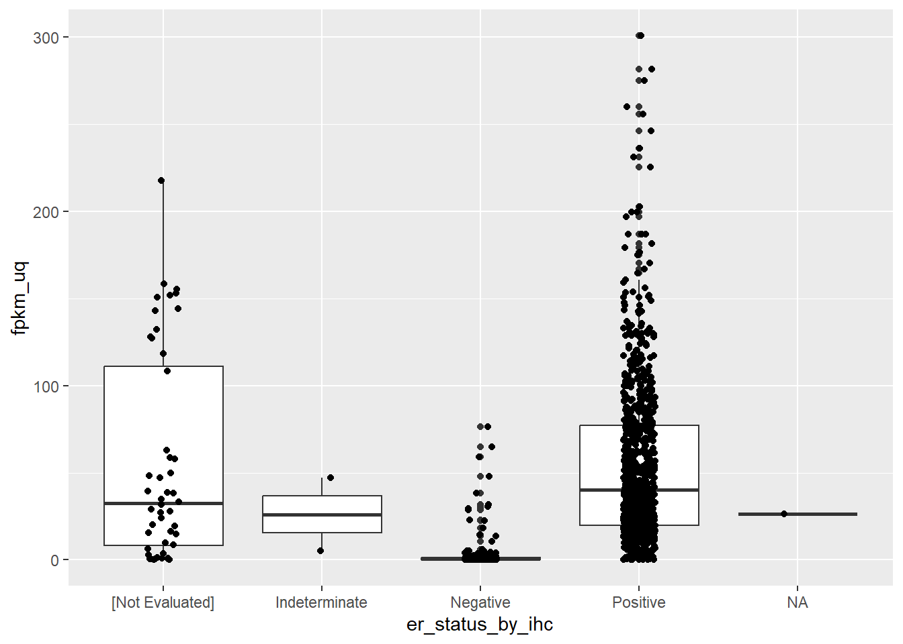
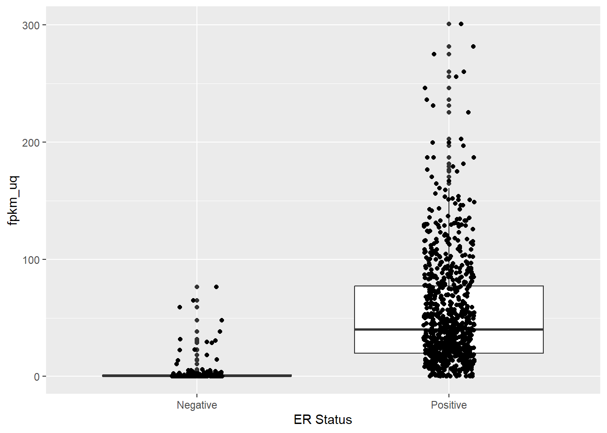
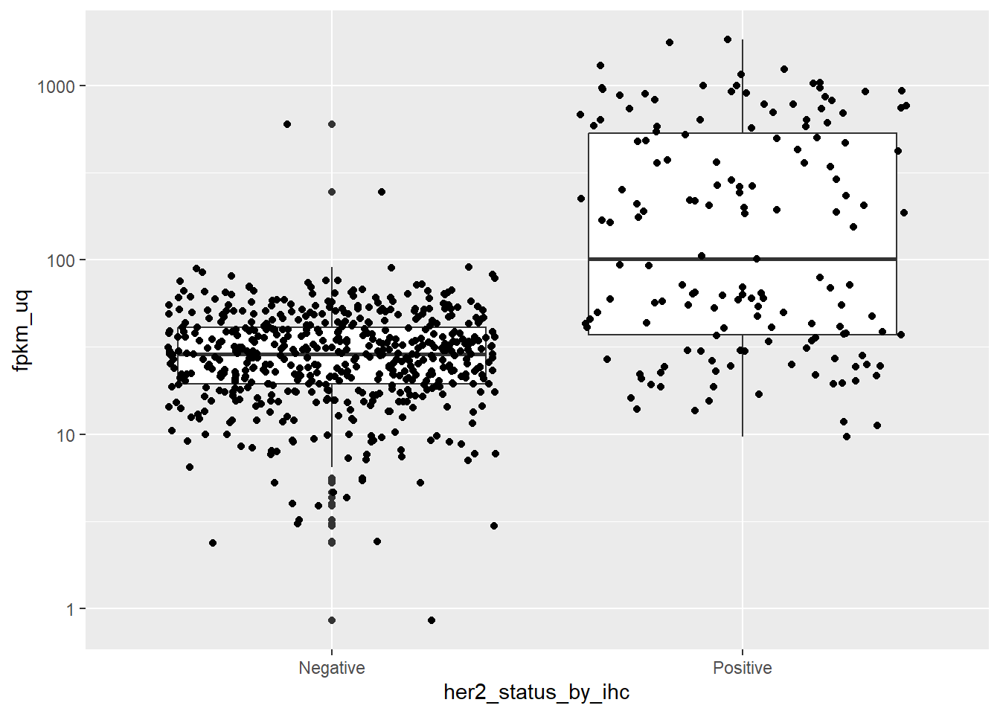
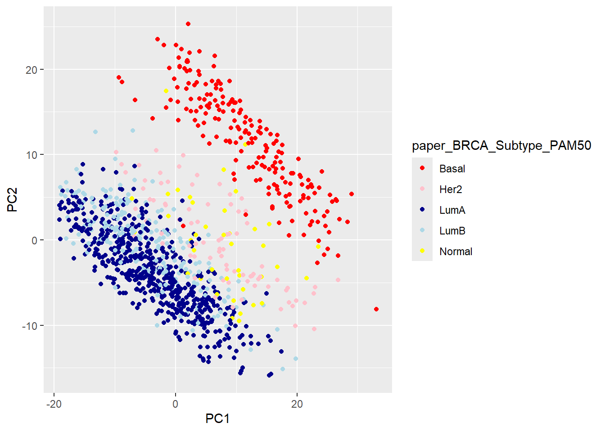
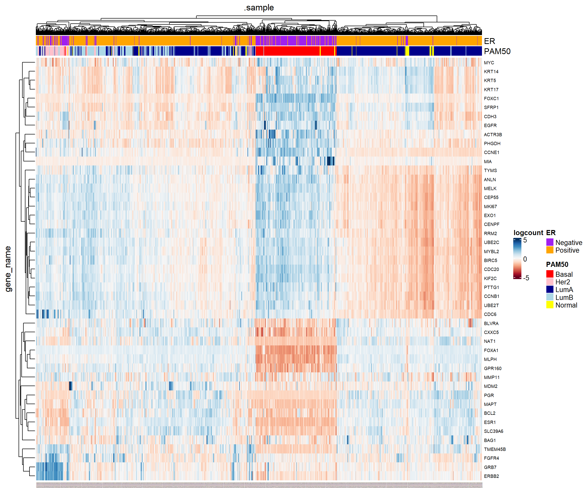
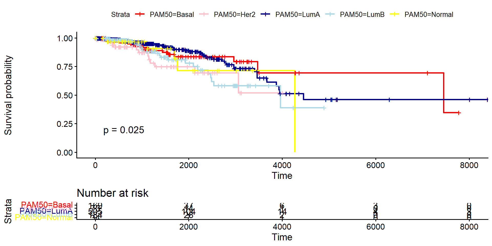

if(!require(BiocManager)) install.packages("BiocManager")
if(!require(TCGAbiolinks)) BiocManager::install("TCGAbiolinks")
if(!require(SummarizedExperiment)) BiocManager::install("SummarizedExperiment")
if(!require(tidybulk)) BiocManager::install("tidybulk")
if(!require(dplyr)) install.packages("dplyr")
if(!require(ggplot2)) install.packages("ggplot2")
if(!require(tidyr)) install.packages("tidyr")
## needed for some example survival analysis
if(!require(survminer)) install.packages("survminer")
## required for heatmap example
if(!require(pheatmap)) install.packages("pheatmap")Tidymodels for omics data: Part 1
Downloading and exploring TCGA (breast cancer) expression data from GEO so we can proceed to use machine learning later. We’ll also make some exploratory plots such as survival analysis
Pre-amble
This will be the first in a series where I look at machine learning techniques applied to omics data. However, before we get ahead of ourselves we’ll need some data. I decided to use breast cancer samples available through The Cancer Genome Atlas (TCGA).
We need the TCGAbiolinks package that will do most of the work of downloading, and tidybulk for manipulation. Some other packages are required for data exploration.
Downloading the data
First of all, we need to decide what dataset we want to download. The Cancer Genome Atlas (TCGA) studies have unique codes (e.g. breast cancer is “TCGA-BRCA”) and if you don’t know the code you can query it. TCGA-BRCA is one of the first studies returned.
N.B. I’m only showing the first few here.
library(TCGAbiolinks)
# Retrieve the full list of projects
all_gdc_projects <- getGDCprojects()
# View the result
# The output is typically a data frame or tibble
all_gdc_projects |>
dplyr::select(id, name) |>
head(n = 5) id name
1 CTSP-DLBCL1 CTSP Diffuse Large B-Cell Lymphoma (DLBCL) CALGB 50303
2 TCGA-BRCA Breast Invasive Carcinoma
3 TCGA-LUAD Lung Adenocarcinoma
4 CPTAC-3 CPTAC-Brain, Head and Neck, Kidney, Lung, Pancreas, Uterus
5 APOLLO-LUAD APOLLO1: Proteogenomic characterization of lung adenocarcinomaTo see all the data interactively within RStudio you can use the View function.
all_gdc_projects |>
dplyr::select(id, name) |> View()What data are available for breast cancer?
getProjectSummary("TCGA-BRCA")$file_count
[1] 70776
$data_categories
file_count case_count data_category
1 21134 1098 Simple Nucleotide Variation
2 9282 1098 Sequencing Reads
3 5317 1098 Biospecimen
4 2288 1098 Clinical
5 14346 1098 Copy Number Variation
6 4876 1097 Transcriptome Profiling
7 3714 1097 DNA Methylation
8 919 881 Proteome Profiling
9 3128 927 Somatic Structural Variation
10 5772 1098 Structural Variation
$case_count
[1] 1098
$file_size
[1] 6.249966e+14We’ll first obtain some clinical information for the TCGA breast cancer samples. The function we will eventually use to download counts will give us some information about the samples, but not everything we would want. For example, in my initial development of these materials I noticed the Estrogen Receptor (ER) status was missing which is a vital clinical indicator variable. For analyses that use site-specific characteristis (e.g. breast in this case), this kind of clinical information is more useful. Detailed clinical information can be downloaded with the following command:-
- project “TCGA-BRCA” specifies the cancer cohort and must match one of the IDs returned by
getGDCprojects - data.category “Clinical” specifies the type of data. In this case information about the patients and their disease.
- data.type “Clinical Supplement” specifies a subset of clinical data: This often points to highly detailed or manually curated clinical record
- data.format “BCR Biotab” files are comprehensive, non-standardized tables created by the Biospecimen Core Resource (BCR) and can be converted into a data frame for manipulation in R.
query <- GDCquery(project = "TCGA-BRCA",
data.category = "Clinical",
data.type = "Clinical Supplement",
data.format = "BCR Biotab")The function we have used only get the download ready and doesn’t actually fetch any data. To actually download the data we need GDCdownload.
GDCdownload(query)This downloads the raw files to our computer. If we want the data in a usable form in R we have to use a final function GDCprepare. In this case it gives a list of data frames. Functions such as head and colnames could be used to inspect the contents of each (I’m using the base lapply as I don’t want to get into purrrin this particular tutorial). I’m looking for something about ER status and it looks like the best bet is clinical_patient_brca. We will save this as a data frame for use later.
N.B. I’m not showing the output as it’s quite lengthy.
library(TCGAbiolinks)
clinical.all <- GDCprepare(query)
lapply(clinical.all, head)
lapply(clinical.all, colnames)
## tidyverse equivlent
## purrr::map(clinical.all, head)
tcga_brca.clin <- clinical.all$clinical_patient_brca
readr::write_tsv(tcga_brca.clin, "tcga_brca.clin.tsv")To get the transcriptomic data we are going to follow a similar approach using the GDCquery, GDCdownload and GDCprepare functions. This will take a lot longer depending on your network connection. The output of GDCprepare in this case is a SummarizedExperiment object which is a standard data type for RNA-seq. As a final step in the code I save the SummarizedExperiment to disk and check if this file exists before starting. This makes sure I don’t repeat the lengthy download.
For my transcriptomic data I am choosing the STAR - Counts option and requesting tumours only (TCGA also holds data for “normal”/healthy tissue). If repeating these steps on a different disease you may need to change these options.
Note
If you are interested in other types of data (Proteome, Methylation, Exome,…) the general procedure is the same as presented here, but the values for workflow.type and data.type will need to be different. The TCGAbiolinks webpage has many examples of downloading data of different types.
TCGAbiolinks will make use of a temporary folder to download file to. I noticed that on my Windows laptop the names of these temporary folders were extremely long and Windows seems to have a limit on a file name. Hence in the following code it will make use of a specific temporary folder. Otherwise on Mac or Unix it will download to your working directory.
# 1. Load necessary packages
library(SummarizedExperiment)
library(TCGAbiolinks)
if(!file.exists("brca.data_full.rds")){
# --- Define the Query to include just the Tumour samples ---
query.brca_tumor <- GDCquery(
project = "TCGA-BRCA",
data.category = "Transcriptome Profiling",
data.type = "Gene Expression Quantification",
workflow.type = "STAR - Counts",
# Request "Primary Tumor only
sample.type ="Primary Tumor"
)
## I'm on Windows and had to change the temporary directory
if(.Platform$OS.type == "windows")
GDCdownload(query.brca_tumor,directory = "C:\\tmp")
else GDCdownload(query.brca_tumor)
# --- Prepare the Data ---
# This converts the downloaded files into a single SummarizedExperiment object
if(.Platform$OS.type == "windows") GDCprepare(query = query.brca_tumor,directory = "C:\\tmp")
else brca.data_full <- GDCprepare(query = query.brca_tumor)
saveRDS(brca.data_full, "brca.data_full.rds")
} else {
brca.data_full <- readRDS("brca.data_full.rds")
}The object, for me at least is 653.44MB. We going to see how to reduce the amount of data we are working with.
brca.data_fullclass: RangedSummarizedExperiment
dim: 60660 1111
metadata(1): data_release
assays(6): unstranded stranded_first ... fpkm_unstrand fpkm_uq_unstrand
rownames(60660): ENSG00000000003.15 ENSG00000000005.6 ...
ENSG00000288674.1 ENSG00000288675.1
rowData names(10): source type ... hgnc_id havana_gene
colnames(1111): TCGA-EW-A2FS-01A-11R-A17B-07
TCGA-OL-A6VR-01A-32R-A33J-07 ... TCGA-E2-A1IU-01A-11R-A14D-07
TCGA-D8-A1XS-01A-11R-A14M-07
colData names(94): barcode patient ... paper_PARADIGM Clusters
paper_Pan-Gyn ClustersFirstly, this object contains many types of “count”, and normalised versions thereof. We’re only going to need one of these for our purposes, and each one we keep is going to make our data dramatically larger.
assayNames(brca.data_full)[1] "unstranded" "stranded_first" "stranded_second" "tpm_unstrand"
[5] "fpkm_unstrand" "fpkm_uq_unstrand"The unstranded assay column contains the integer count of reads mapped to each gene, summed across both the forward and reverse strands. This is the closest representation of the true number of RNA fragments sequenced for that gene. If our main priority was for differential expression (DE), we would choose these values. However, our plan to use tidybulk and tidymodels for a classification exercise (not formal DE analysis), so we will prefer the fpkm_uq_unstrand as these are better suited for regression-based machine learning models and visualisation. The data have already undergone some normalisation make values comparable across samples. The “FPKM” stands for the standard normalisation of sequencing depth (per millions reaads) and gene length, whereas UQ means “Upper-Quartile” scaling to reduce the influence of extreme outliers.
We’ll create a new SummarizedExperiment object from scratch that will hold just these data. We can also take the opportunity to join the sample information included with the SummarizedExperiment as standard, with the data we queried.
tcga_brca.clin <- readr::read_tsv("tcga_brca.clin.tsv", show_col_types = FALSE)
fpkm_uq_assay <- assay(brca.data_full, "fpkm_uq_unstrand")
# get the rowData (gene information) and colData (sample information)
# These components are used directly from the original object
gene_info <- rowData(brca.data_full)
sample_info <- colData(brca.data_full) |>
data.frame() |>
dplyr::left_join(tcga_brca.clin, by = c("patient"="bcr_patient_barcode"))
# create a new SummarizedExperiment object
brca_fpkm_uq_unstrand <- SummarizedExperiment(
assays = SimpleList(fpkm_uq = fpkm_uq_assay),
rowData = gene_info,
colData = sample_info
)
## print the output to check
brca_fpkm_uq_unstrandclass: SummarizedExperiment
dim: 60660 1111
metadata(0):
assays(1): fpkm_uq
rownames(60660): ENSG00000000003.15 ENSG00000000005.6 ...
ENSG00000288674.1 ENSG00000288675.1
rowData names(10): source type ... hgnc_id havana_gene
colnames(1111): TCGA-EW-A2FS-01A-11R-A17B-07
TCGA-OL-A6VR-01A-32R-A33J-07 ... TCGA-E2-A1IU-01A-11R-A14D-07
TCGA-D8-A1XS-01A-11R-A14M-07
colData names(205): barcode patient ... tissue_source_site
tumor_tissue_site# save to disk
saveRDS(brca_fpkm_uq_unstrand, "brca_fpkm_uq_unstrand.rds")
rm(fpkm_uq_assay)Since we don’t need the object we originally created we can delete it from memory in R.
rm(brca.data_full)Reducing the amount of data
We are not going to be running any machine learning methods or visualisation on the data we have now. More than anything else, it would take far too long to run and require huge amounts of compute resource. The data consists of 60660 “genes” and 1111 samples. Considering the genes first of all, not all of them are going to be informative and will only contribute noise to our data making any machine learning more complicated. In a previous post I introduced the tidybulk package for dealing with RNA-seq in a manner consistent with the tidyverse framework in R.
library(tidybulk)The package I will be eventually using (SPOILER ALERT:tidymodels) has some pre-processing steps for removing uninformative features that are usually recommended. However, I am going to revert to some domain knowledge and use some functionality from tidybulk which are specifically developed for RNA-seq. First of all, we can remove genes that are lowly-expressed using the keep_abundant function. I played around with the settings for keep_abundant here as the defaults were a bit too aggressive. On inspecting the names of the genes retained (see commented code below) I found that PTEN and ESR1 were no longer in my data using the default, and from my knowledge of breast cancer I figure these are important.
##NB using the base pipe |> here as we haven't loaded tidyverse yet
brca_fpkm_uq_unstrand_expressed <- brca_fpkm_uq_unstrand |>
keep_abundant(minimum_counts = 0.5, # Lower the expression threshold
minimum_proportion = 0.025 # Lower the proportion of samples required)
)
rm(brca_fpkm_uq_unstrand)
# uncomment to inspect the genes retained
# rowData(brca_fpkm_uq_unstrand_expressed) |> data.frame() |> View()The reduction in the number of genes is quite dramatic - but this is a good thing for our purposes as it will make things run quicker. The next step is to remove genes that do not have enough variability in the data. Variability is important as genes whose expression level stays the same across samples are not going to be very informative for distinguishing different subtypes. However, in the following code I will keep the names of the variable genes, but not actually do the filtering yet. Conveniently, tidybulk allows the usage of the pipe (|> or %>%) so we don’t have to create any new variables. Explicitly creating a tidybulk object means we can use dplyr operations such as pulling the gene_name name.
var_genes <- brca_fpkm_uq_unstrand_expressed |>
keep_variable(top = 2000) |>
tidybulk() |>
filter(!duplicated(gene_name)) |>
dplyr::pull(gene_name)
var_genes[1:10] [1] "SCGB2A2" "SCGB1D2" "TFF1" "PIP" "CPB1"
[6] "AC093001.1" "S100A7" "CLEC3A" "LTF" "IGHG1" I’d like my data to be somewhat informed by biology, so will also use a set of Cancer genes. I got the set of genes following from OncoKB
if(!file.exists("cancerGeneList.tsv")) download.file("https://raw.githubusercontent.com/markdunning/markdunning.github.com/refs/heads/master/posts/2025_11_06_tidymodels_TCGA_part1/cancerGeneList.tsv", destfile = "cancerGeneList.tsv")
cancer_genes <- read.delim("cancerGeneList.tsv")
cancer_genes |> head(n=10) Hugo.Symbol Entrez.Gene.ID GRCh37.Isoform GRCh37.RefSeq GRCh38.Isoform
1 ABL1 25 ENST00000318560 NM_005157.4 ENST00000318560
2 AKT1 207 ENST00000349310 NM_001014431.1 ENST00000349310
3 ALK 238 ENST00000389048 NM_004304.4 ENST00000389048
4 AMER1 139285 ENST00000330258 NM_152424.3 ENST00000374869
5 APC 324 ENST00000257430 NM_000038.5 ENST00000257430
6 AR 367 ENST00000374690 NM_000044.3 ENST00000374690
7 ARID1A 8289 ENST00000324856 NM_006015.4 ENST00000324856
8 ASXL1 171023 ENST00000375687 NM_015338.5 ENST00000375687
9 ATM 472 ENST00000278616 NM_000051.3 ENST00000278616
10 ATRX 546 ENST00000373344 NM_000489.3 ENST00000373344
GRCh38.RefSeq Gene.Type X..of.occurrence.within.resources..Column.J.P.
1 NM_005157.4 ONCOGENE 7
2 NM_001014431.1 ONCOGENE 7
3 NM_004304.4 ONCOGENE 7
4 NM_152424.3 TSG 7
5 NM_000038.5 TSG 7
6 NM_000044.3 ONCOGENE 7
7 NM_006015.4 TSG 7
8 NM_015338.5 TSG 7
9 NM_000051.3 TSG 7
10 NM_000489.3 TSG 7
OncoKB.Annotated MSK.IMPACT MSK.HEME FOUNDATION.ONE FOUNDATION.ONE.HEME
1 Yes Yes Yes Yes Yes
2 Yes Yes Yes Yes Yes
3 Yes Yes Yes Yes Yes
4 Yes Yes Yes Yes Yes
5 Yes Yes Yes Yes Yes
6 Yes Yes Yes Yes Yes
7 Yes Yes Yes Yes Yes
8 Yes Yes Yes Yes Yes
9 Yes Yes Yes Yes Yes
10 Yes Yes Yes Yes Yes
Vogelstein COSMIC.CGC..v99.
1 Yes Yes
2 Yes Yes
3 Yes Yes
4 Yes Yes
5 Yes Yes
6 Yes Yes
7 Yes Yes
8 Yes Yes
9 Yes Yes
10 Yes Yes
Gene.Aliases
1 ABL, JTK7, c-ABL
2 AKT, PKB, PRKBA, RAC, RAC-alpha
3 CD246
4 FAM123B, FLJ39827, RP11-403E24.2, WTX
5 DP2.5, PPP1R46
6 AIS, DHTR, HUMARA, NR3C4, SBMA, SMAX1
7 B120, BAF250, BAF250a, C10rf4, C1orf4, P270, SMARCF1
8 KIAA0978
9 ATA, ATC, ATD, ATDC, TEL1, TELO1
10 JMS, MRX52, RAD54, XH2, XNPNow we have a set of gene names that we want to keep in the analysis. The filtering this time is more efficient on the SummarizedExperiment object.
cancer_gene_names <- cancer_genes$Hugo.Symbol
to_keep <- rowData(brca_fpkm_uq_unstrand_expressed)$gene_name %in% c(cancer_gene_names, var_genes)
brca_gene_filtered <- brca_fpkm_uq_unstrand_expressed[to_keep,]
brca_gene_filteredclass: SummarizedExperiment
dim: 3119 1111
metadata(0):
assays(1): fpkm_uq
rownames(3119): ENSG00000002016.18 ENSG00000002834.18 ...
ENSG00000287906.1 ENSG00000287914.1
rowData names(11): source type ... havana_gene .abundant
colnames(1111): TCGA-EW-A2FS-01A-11R-A17B-07
TCGA-OL-A6VR-01A-32R-A33J-07 ... TCGA-E2-A1IU-01A-11R-A14D-07
TCGA-D8-A1XS-01A-11R-A14M-07
colData names(205): barcode patient ... tissue_source_site
tumor_tissue_sitesaveRDS(brca_gene_filtered, "brca_gene_filtered_SE.rds")Some data Exploration
Before embarking on any machine learning (which we will tackle next time), it is worth spending some time getting familiar with your data. Armed with some domain knowledge we can run a few basic checks. If you haven’t worked with RNA-seq data in R before, it might be worth taking a look over these examples.
When working on breast cancer, and coming from a purely computational background, I quickly learnt about the importance of Estrogen Receptor (ER) status and the gene that encodes the Estrogen Receptor protein ESR1. The status of a breast cancer patient is a well-established biomarker and can indicate whether the patient’s cancer is likely to respond to hormone-blocking therapies. In other words, patients that can been categorised as ER positive should have higher expression of ESR1. In this dataset ER status looks to have been investigated by Immunohistochemistry (IHC) and recorded in the er_status_by_ihc. This is one of the variables present in the BCR clinical data.
To get the data for just ESR1 It’s actually more efficient in this case to filter the gene from the SummarizedExperiment object before calling tidybulk. I’m not sure if this is the intended workflow, but our data are so large that calling tidybulk on the entire dataset takes too much RAM in my case.
library(ggplot2)
library(dplyr)
brca_gene_filtered[rowData(brca_gene_filtered)$gene_name == "ESR1"] |>
tidybulk() |>
ggplot(aes(x = er_status_by_ihc, y = fpkm_uq)) + geom_boxplot() + geom_jitter(width = 0.1)
Phew! So ESR1 expression is indeed higher in ER positive samples. The plot also highlights some discrepancy in the recording of the ER status which should be cleaned prior to analysis. For the sake of the plot we can filter out the offending entries.
brca_gene_filtered[rowData(brca_gene_filtered)$gene_name == "ESR1"] %>%
tidybulk() %>%
filter(er_status_by_ihc %in% c("Positive", "Negative")) %>%
ggplot(aes(x = er_status_by_ihc, y = fpkm_uq)) + geom_boxplot() + geom_jitter(width = 0.1) + xlab("ER Status")
In a similar vein, the gene ERBB2 should be higher in patients that are positive for Her2 staining by IHC.
brca_gene_filtered[rowData(brca_gene_filtered)$gene_name == "ERBB2"] %>%
tidybulk() %>%
filter(her2_status_by_ihc %in% c("Positive", "Negative")) %>%
ggplot(aes(x = her2_status_by_ihc, y = fpkm_uq)) + geom_boxplot() + geom_jitter() + scale_y_log10()
Breast cancer was traditionally classified into five intrinsic subtypes, and microarray studies sought to identify genes that define these subtypes. On such 50 gene panel was derived using a prediction analysis of microarray (PAM) and hence called PAM50. The samples in the TCGA dataset have been classified using this method, and we can check the expression level of ESR1 and ERBB2 respectively.
brca_gene_filtered[rowData(brca_gene_filtered)$gene_name %in% c("ESR1","ERBB2")] %>%
tidybulk() %>%
filter(!is.na(paper_BRCA_Subtype_PAM50)) %>%
ggplot(aes(x = paper_BRCA_Subtype_PAM50, y = fpkm_uq, fill = paper_BRCA_Subtype_PAM50)) +
geom_boxplot() +
geom_jitter(alpha=0.1) +
scale_y_log10() +
facet_wrap(~gene_name) +
scale_fill_manual(values = c("red", "pink", "darkblue", "lightblue", "yellow"))
Again, this all makes perfect sense as Luminal A and Luminal B are ER-positive groups, Basal and Her2 are ER-negative and ERBB2 should be highly expressed in the Her2 subtype.
So, are the Pam50 subtypes are major source of variation in our data? The tidybulk package allows us to run dimensionality reduction techniques such as PCA to look at this issue. The reduce_dimensions function computes the Principal Components and these can be added to our data ready for visualisation. Normally tidybulk would require a scale_abundance step here to correct for differences in sequencing depth between samples, but since we are using values that are already normalised to some extent this is not needed on this ocassion.
brca_gene_filtered |>
reduce_dimensions(method = "PCA") %>%
## not needed here: scale_abundance() |>
pivot_sample() %>%
select(.sample, PC1, PC2)# A tibble: 1,111 × 3
.sample PC1 PC2
<chr> <dbl> <dbl>
1 TCGA-EW-A2FS-01A-11R-A17B-07 9.35 -8.84
2 TCGA-OL-A6VR-01A-32R-A33J-07 -6.26 -4.46
3 TCGA-E9-A226-01A-21R-A157-07 -8.62 4.47
4 TCGA-A8-A08H-01A-21R-A00Z-07 0.362 5.87
5 TCGA-D8-A27H-01A-11R-A16F-07 7.76 16.8
6 TCGA-D8-A3Z6-01A-11R-A239-07 -5.76 -5.94
7 TCGA-B6-A1KN-01A-11R-A13Q-07 0.728 0.144
8 TCGA-BH-A0DL-01A-11R-A115-07 20.8 6.48
9 TCGA-A8-A09X-01A-11R-A00Z-07 13.6 -4.60
10 TCGA-BH-A2L8-01A-11R-A18M-07 5.41 -7.91
# ℹ 1,101 more rowsIt is now straightforward to plot, and also colour according to the PAM50 subtype of each sample.
brca_gene_filtered %>%
reduce_dimensions(method = "PCA") %>%
pivot_sample() %>%
filter(!is.na(paper_BRCA_Subtype_PAM50)) %>%
ggplot(aes(x = PC1, y = PC2, col = paper_BRCA_Subtype_PAM50 )) +
geom_point() +
scale_color_manual(values = c("red", "pink", "darkblue", "lightblue", "yellow"))
A heatmap of genes from the literature
The PCA looks pretty good, with the main separation being between basal and Luminal A/B. Furthermore, we can get from the literature the names of the genes used in the PAM50 classifier. I got these from the genefu Bioconductor package and saved as a small text file. My previous go-to package for heatmaps was pheatmap, but whilst writing this up I came across tidyHeatmap
This package works quite well with our workflow of using a “tidy” framework. It requires data in a tbl_df or tibble format, which we can create from tidybulk once we are done with pre-processing the data. Although the data we are working with are normalised, we must apply a log\(_2\) transformation for the purposes of visualisation. I’ve also applied some basic data cleaning
The tidyHeatmap function heatmap allows us to quickly add sample annotations to the plot, and since our data were using the tidy framework we have plenty of clinical variables at our fingertips. I’m choosing ER status and PAM50 classification, but you could add others such age, grade, or anything else.
if(!file.exists("PAM50_genes.txt")) download.file("https://raw.githubusercontent.com/markdunning/markdunning.github.com/refs/heads/master/posts/2025_11_06_tidymodels_TCGA_part1/PAM50_genes.txt", destfile = "PAM50_genes.txt")
pam50_genes <- read.table("PAM50_genes.txt")[,1]
library(tidyHeatmap)
brca_gene_filtered[rowData(brca_gene_filtered)$gene_name %in% pam50_genes,] %>%
## once filtered, make a "tidy" version
tidybulk() %>%
mutate(logcount = log2(fpkm_uq + 1)) %>%
## get the counts, samples and genes
rename(ER = er_status_by_ihc, PAM50 =paper_BRCA_Subtype_PAM50) %>%
as_tibble() %>%
mutate(ER = ifelse(ER %in% c("Positive", "Negative"), ER, NA)) %>%
filter(!is.na(ER), !is.na(PAM50)) %>%
tidyHeatmap::heatmap(
.column = .sample,
.row = gene_name,
.value = logcount,
scale = "row",
palette_value = circlize::colorRamp2(
seq(-5, 5, length.out = 11),
RColorBrewer::brewer.pal(11, "RdBu")
)
) %>%
annotation_tile(ER ,palette = c("orange","purple")) %>%
## I couldn't work out how to assign particular colours, so had to experiment at bit with the correct order to specify the colours in
annotation_tile(PAM50,palette = c("darkblue", "pink", "lightblue", "yellow", "red"))
Showing the data in this manner also us to see which genes look to be over- or under-expressed in certain subtypes. Eventually, we will progress to doing our own classification so it will be useful to compare to this information.
Survival Analysis
Finally, a pertinent question to ask is whether the subtypes are clinically-meaningful. If we know what subtype a patient has, what can this tell us about their survival prospects? A kaplan-meier (KM) curve is a standard way to estimate and visualize the survival probability over a specified period, and can be created by the survival package and visualised using the package survminer. The curve starts at 100% (or probability 1.0) at time zero and steps down each time a patient dies. A tick mark on the curve indicates a patient who was lost to follow-up or was still alive when the data was collected (censored). These patients contribute to the probability calculation up until the time they were last observed.
The clinical data we have needs modifying slightly to run the analysis. In particular we need to create “Status” and “Time” columns which records if a patient is alive (0) or dead (1) at the end of the study, and the time to either death or total follow-up time. We will also remove any patients where the Time or status is missing or inaccurate. The dataset also includes some metastatic or recurrent tumours, but for the purposes of the curve we will use only “primary” samples.
library(survminer)
library(survival)
clin_data_corrected <- colData(brca_gene_filtered) %>%
data.frame() %>%
dplyr::filter(classification_of_tumor == "primary") %>%
#Define Time (Coalesce death date and follow-up date)
dplyr::mutate(
# Use days_to_death if available; otherwise, use days_to_last_follow_up
Time = as.numeric(dplyr::coalesce(days_to_death, days_to_last_follow_up)),
# Define Status
# Event=1 (Dead), Censored=0 (Alive)
Status = ifelse(vital_status.x == "Dead", 1, 0)
) |>
# Remove rows with NA in Time, Status, or Subtype
dplyr::filter(!is.na(Time), Time > 0, Status %in% c(0, 1), paper_BRCA_Subtype_PAM50 != "NA") |>
dplyr::mutate(PAM50 = paper_BRCA_Subtype_PAM50)Running the analysis and plotting can then be achieved using the survfit and ggsurvplot packages respectively. The p-value requested is the p-value for there being any difference in survival between different groups and is calculated using a log-rank test.
# --- Run Survival Analysis ---
fit <- survfit(Surv(Time, Status) ~ PAM50, data = clin_data_corrected)
# --- Plot ---
ggsurvplot(
fit,
data = clin_data_corrected,
pval = TRUE,
palette = c("red", "pink", "darkblue", "lightblue", "yellow")
)
There are plenty more examples on the survminer website on how to customise this further.
Next time
Make sure the gene filtered object brca_gene_filtered is saved for next time and we will start some machine learning tasks.